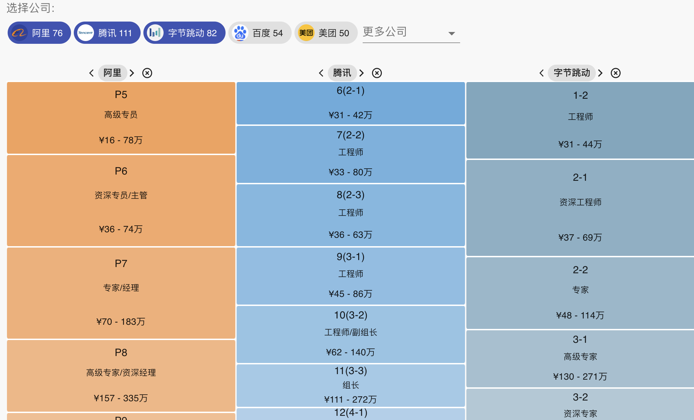

金三银四，聊聊换工作的那些事
大家好，我是站长 polarisxu。
下周就进入 3 月份了，正所谓金三银四，是换工作的黄金时间。
实际上从春节开工到现在十天左右时间，「Go语言中文网」上新发的招聘信息不少，从 「Go招聘」公众号上也看到了不少招聘信息。
那到底该不该换工作呢？什么情况下换工作？今天一起聊聊这个话题。
马云曾说，员工离职，原因很多种，但只有两点最真实：
-
钱，没给到位；
-
心，委屈了。
这些归根到底就一条：干得不爽。
其实更进一步，钱是物质，每个人都要生活，所以，工作获得报酬，这是基本的物质保障。而第二点可以归结为是精神层面的，工作是否让你精神舒畅，是否有成就感。
我个人认为，除了以上两点，还有一点，对现代人来说很重要，那就是是否有发展。这个发展包括两个方面，一个是个人能力的成长，一个是职位升迁的可能。有了好的发展，物质和精神层面的问题会得到更好地解决。
01 成长
先说成长。
关于成长，你需要问问自己，过去一年，你在这个公司有成长吗？如果没有，原因在你自己还是公司做的事情不利于你成长。如果是你自己的原因，换个工作你大概率也不会有成长。
怎么判断自己能力有没有提升了？这个不好量化，但可以从一些维度进行考虑。我建议可以从以下方面进行考虑。
1）年终总结
回顾过去一年，自己做了哪些项目，从这些项目中自己学到了什么之前不懂的点；积累了什么经验，掌握了哪些技能。回顾并写下来，找出自己工作中的亮点，自己的贡献和解决的难题。实际上，这个过程是在复盘，是在为简历填充内容，也是在为可能的面试做准备。我个人比较建议，在项目过程中要有意识的做一些总结、复盘和反思，可以是周报、月报或项目总结，亦或是自己写博文等，养成好习惯，方便年终梳理。
除了工作上的，自己过去一年看了什么书，专项学习了哪些技能？学到老活到老。知识是需要积累的，学习能力也是需要锻炼的。通过额外给自己充电，可以在工作中更得心应手。
2）上级对你的评价
大公司会进行评级，如果顺利晋级，自然可以说明你的能力提升了。
如果没有评级或不顺利，可以和上级沟通，听听上级的意见，自己过去一年哪些地方做的好，哪些做的不好，自己能力有无提升，哪些方面需要加强。这一方面是审视自己，听取别人的建议，另一方面也可以较好的表明自己的上进心。具体沟通的方式可以多种，比如面聊（可以轻松的环境，比如请上级吃个饭）、邮件等形式。也可以主动给上级发自己接下来一年的个人能力提升和工作计划，然后让领导对你进行一下评价。
3）日常工作的自我感觉
比如想想自己是否比之前有更多不知道的东西？是否有更多需要学习的？因为知道越多，不知道的也越多。在日常工作中，对类似的事情，或达到相同的结果是否更得心应手，或者工作结果是否达到了更难更高的目标。
02 薪酬
聊完成长，聊聊薪酬。
关于薪酬，理想情况是“钱多事少离家近”，但这几乎是不可能的。所以对于薪酬，更多考虑的是“可接受的薪酬”。
什么是可接受的薪酬？
意思是说，根据你的能力，结合行业薪资情况，你可以接受的薪酬。特别是，你刚开始工作，更多追求的应该是好的工作机会，有发展的工作机会，薪酬别成为你的第一考虑，更别因为它而放弃好的机会。需要有往前看。
关于薪酬对标，推荐一个网站：https://duibiao.info/，也许会对你有帮助。

此外，如果你只是不满足现在的薪酬，建议你可以和你的上级谈谈。谈之前，你应该做一些必要的功课。比如自己过去一年的业绩、工作的表现，能力的成长，同时行业的工资水平，自己是什么水平。做到有理有据，而不是简单的：一年了，我应该涨薪资，因为别人都涨了。
接下来，谈谈发展机会的判断。
03 判断机会
一个机会好不好，我认为可以从两方面考虑。一是合适的事；二是合适的人。因为换工作换的是事，同时也是换和不一样的人共事。
关于事，一方面是做什么，另一方面是怎么做。
俗话说，男怕入错行，女怕嫁错郎。对于一份工作，同样需要考虑做什么的问题。这件事跟目前行业大趋势有无关联？当前处于什么阶段？从 0 到 1 的起步探索阶段，还是从 1 到 n 的快速扩张阶段。不同的阶段，对自己锻炼是不一样的，风险也是不一样的，当然收益也不一样。所以，需要结合你的情况看自己看现阶段适合什么阶段的事。
做什么确定了，还需要考虑怎么做的问题。对于程序员来说，需要考虑做这件事，需要什么技能，自己掌握的技能和工作的匹配度，这样的技能要求，是否适合自己成长；这个公司做事的方法、使用的工具是怎么样的，你是否能接受。
所以，合适的事这个角度，不一定非得换公司，如果可能，公司内部换其他事情也是可以的。
关于人，我认为需要考虑两个方面：团队和领导。
是否要换工作，如果是因为人的因素，考虑你目前的团队是个什么样的团队，有什么问题。团队氛围是否融洽，沟通是否高效，是否彼此信任，分工是否明确，彼此能否互相帮助，能对彼此成长有帮助等。对于将要换的目标公司，你提前思考，怎么能够较好的了解团队的情况。
接着是领导。其实一个团队的情况，很大程度是领导决定的，所以领导很关键。你现在的领导是个什么样的人，是否能带领团队很好的拿结果，是团队的领路人还是阻挡者？能给团队成员起到引导的作用吗？
当然，如果你的职位比较高，其实可能需要进一步好好了解公司的老板，他是一个什么风格的人。
在群里经常有人发这样的表情：走对圈子跟对人。这说的就是团队和领导。
04 总结
要不要换工作，需要综合考虑物质、精神和发展三个层面的满意度，分析现在的薪酬、做的事情和一起做事的人，你满意吗？如果你确定换工作，薪资、合适的事和合适的人也是你需要考虑的，因为事和人对你的发展很重要，对你的精神满足感也很重要。
当然，如果你没有想清楚，也可以去外面看看机会，了解行情，也可以验证自己的能力水平。但，请别裸辞，想清楚了，找到满意答案了，再考虑辞职。
本文没有谈大公司还是小公司的问题。我认为那只是表现形式，本质上离不开薪酬（薪资、福利）、事和人。关键看你需要什么，看重什么。